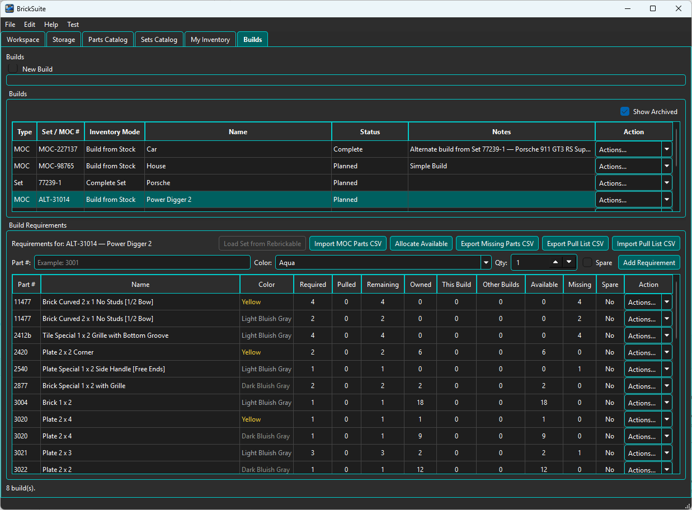
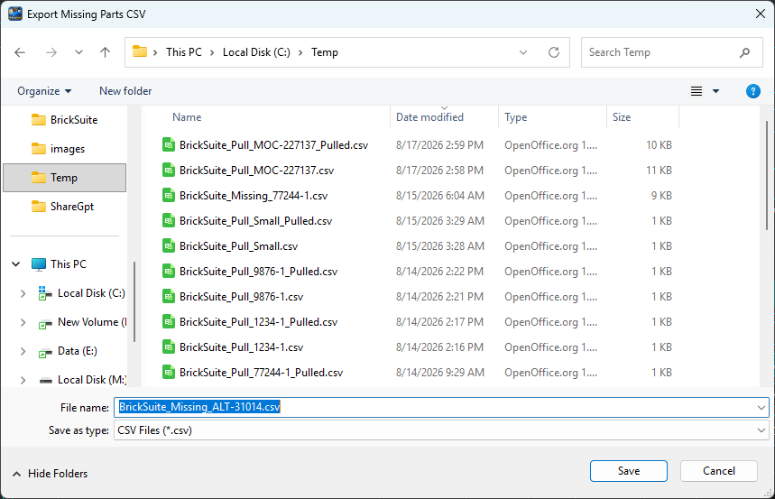
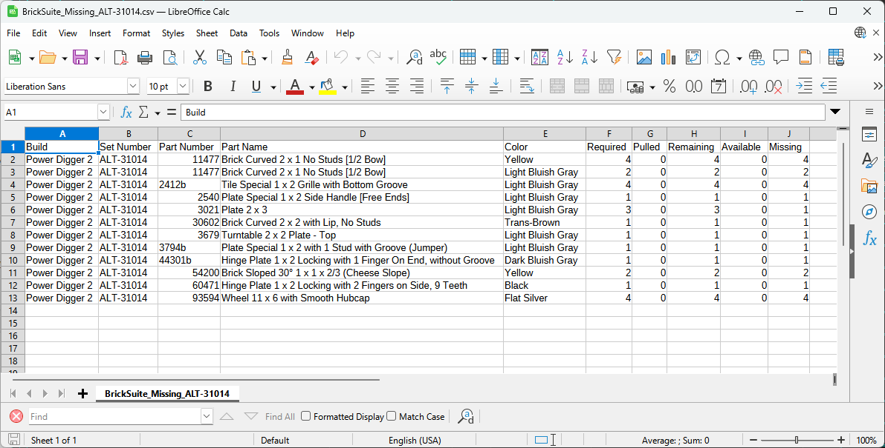

Missing Parts identifies Build requirements that cannot currently be satisfied from available loose inventory. The workflow helps you separate pieces BrickSuite can already reserve from pieces that still need to be acquired.
A missing quantity is not simply the number required by the Build. BrickSuite considers the current Build state, inventory already pulled, allocations, inventory committed to other Builds, and the loose inventory that remains available.
This example uses the MOC Build Power Digger 2. Its requirements contain a realistic mixture of parts that are available, partially available, and unavailable.

The Build Requirements table provides the information needed to understand each shortage:
Some requirements have no matching loose inventory and therefore show the entire remaining quantity as missing. Other requirements can be satisfied completely or partially from inventory.
Before acquiring missing pieces, use Allocate Available. BrickSuite reserves the loose inventory it can legitimately use for the Build and leaves the unresolved shortage visible.
The resulting table makes partial shortages easy to see. For example, 3021 — Plate 2 x 3 / Light Bluish Gray requires 3 pieces. Two matching pieces are allocated to this Build, leaving 1 missing.
Requirements with enough inventory can be fully allocated, while requirements with no available inventory remain completely missing. BrickSuite does not treat the Build as all-or-nothing; it reserves what is available and identifies only the remaining shortage.
See Allocate Available for manual and automatic allocation details.
When the remaining shortages are ready to be taken outside BrickSuite, choose the Build's Export Missing Parts CSV action and select where to save the file.

BrickSuite proposes a descriptive filename based on the Build. In this example the export is saved as BrickSuite_Missing_ALT-31014.csv.
Saving the CSV does not change inventory, allocations, or Build requirements. It creates a working list of the pieces that still need to be acquired.
Open the exported file in a spreadsheet or another CSV-capable application.

The exported file shown here includes:
The Missing column is the quantity that still needs to be acquired for each exported requirement. The other columns preserve useful Build context so the shortage can be understood without having BrickSuite open beside the spreadsheet.
The CSV can be used as a working acquisition list when searching for parts from whatever source you choose. BrickSuite v0.2.0 does not treat exporting the file as a purchase and does not assume that the missing pieces have been obtained.
Once missing pieces have been physically acquired, add them to the appropriate BrickSuite Workspace inventory. Depending on how the parts were obtained, this can be done through normal My Inventory entry or a supported inventory import workflow.
Then return to the Build and run Allocate Available again. BrickSuite can reserve the newly available pieces for the requirements that were previously short.
Build Requirements
|
Allocate Available
|
Reserve everything currently available
|
Remaining shortage becomes Missing
|
Export Missing Parts CSV
|
Acquire the physical pieces
|
Add / Import them into My Inventory
|
Allocate Available again
|
Missing decreases or reaches zero
|
Continue to Pull List
A requirement does not have to be completely unavailable to appear as missing. If a Build requires 3 pieces and only 2 can be allocated, the remaining quantity of 1 is the shortage that must still be acquired.
This is why the exported file contains both the requirement context and the Missing quantity: you acquire only what is still needed rather than purchasing the entire original requirement again.
Inventory allocated to another Build is not freely available to the current Build. The Other Builds column helps explain why a part may be owned in the Workspace but still not be available for allocation here.
This prevents multiple Builds from depending on the same physical loose piece at the same time.
After the necessary pieces have entered inventory and been allocated, the Build can proceed to the physical pull workflow. Export the Pull List, retrieve the pieces from Storage, record the actual Pulled quantities, import the completed list, and reconcile it with BrickSuite.
See Builds for the complete Build lifecycle and pull-list round trip.
Shortages reflect the current requirement and its effective fulfillment identity, including deliberate substitutions. Exported purchasing data does not itself receive physical inventory. Review supported provider receiving previews before committing newly acquired pieces.
Builds | Allocate Available | My Inventory | Rebrickable Import | MOCs